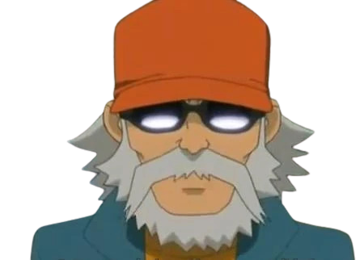

BIOGRAFIA
Mark Evans (円堂 守 Endō Mamoru) è il protagonista principale della serie Inazuma Eleven.
È il capitano e portiere della Raimon e dell'Inazuma Japan, anche se, per parte della seconda stagione, gioca da libero.
Nella serie GO, 10 anni dopo il Football Frontier International, diventerà prima l'allenatore della Raimon (GO) e
successivamente della Chrono Storm nella serie Chrono Stone.
Nella serie Galaxy ricompare nell'episodio 18 dopo aver allenato Zack Avalon per entrare nella Earth Eleven.
Nella serie Inazuma Eleven Ares, diventa portiere e capitano del liceo Simplicio, mentre nell'ultima serie non ancora uscita in italia,
Inazuma Eleven Orion, diventa il capitano della Inazuma Japan.
Nel film Inazuma Eleven GO VS Danball Senki W è portiere e capitano della Inazuma Legend Japan.
Nel film Inazuma Eleven Chou Jigen Dream Match è portiere e capitano della Inazuma Best Eleven.
Mostra una grande ammirazione verso David Evans, suo nonno,
anche lui portiere, ma sua madre non vorrebbe che giocasse a calcio
a causa dell'incidente del nonno David,
avvenuto in circostanze misteriose quando la Inazuma Eleven si recava allo stadio
per giocare la finale del Football Frontier contro la Royal Academy.
Come suo nonno, Mark utilizza un metodo di allenamento speciale un po' particolare:
egli ha legato un vecchio pneumatico a un albero, lo lancia e cerca di bloccarlo,
il più delle volte ci riesce.
